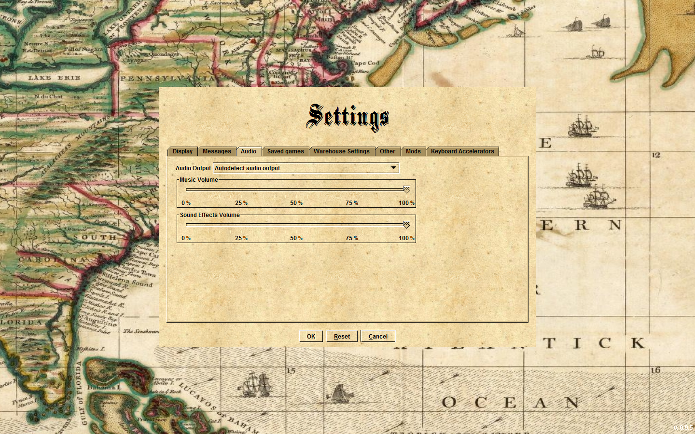
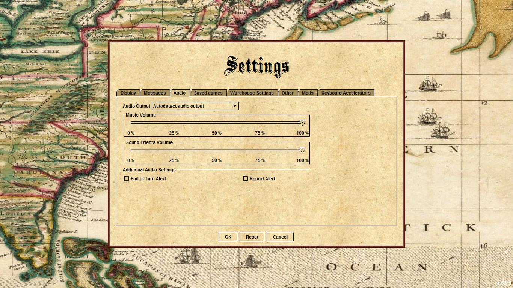

Software Engineering Part II - Contribution
Name: Scott Hofman
Student Number: s0943941
FreeCol: http://www.freecol.org/
FreeCol SourceForge: http://bit.ly/gUyxa
FreeCol JavaDoc: http://www.freecol.org/javadoc/
FreeCol is an open source version of Sid Meier’s Colonization. With its wide use and extensive develop period, there were multiple opportunities for user contribution. For my own, I decided to tackle a feature request provided by Steve Webb on the Feature Request Board: http://bit.ly/bDptLY. I decided to only attempt the bare minimum of the request – a sound alert at the start of the player’s turn, with the customizable option to turn it off and on. This seemed like an adequate task for somebody who has never worked with GUI design nor anything of this magnitude.
I spent the majority of my time pouring over the provided Documentation, trying to discern where best to put my code (I’d guess around 4-5 hours was spent). With two packages dedicated to options (net.sf.freecol.client.gui.option and net.sf.freecol.common.option) I realized quickly that it was easier to find the required code simply by searching the project for the files. This came up with ClientOptions.java, where I could edit the OptionGroups (panels on the preferences page). I knew that I wanted to include it under the Audio tab, but I needed the image to be a checkmark.
This task led on a code-search for about three hours, trying to understand how Specification, OptionGroupUI, BooleanOptionUI and the .xml file specification (there were three of them, one for a classic mode, one for the improved mode, and the third for testing). I eventually realized that Specification parsed the .xml document into one of the OptionUIs, and that I wanted a Boolean to represent a checkmark.
<optionGroup id="clientOptions.audio.audioSet" >
<!-- Creates audio Option for in game. -->
<Option id="model.option.turnAlert" defaultValue="false"/>
</optionGroup>
This code I added to the specification.xml file, to create a new Group, and then, within that group, a BooleanOption initially set to false. This is the code behind all the options within FreeCol. I had to write a definition and intial conditions, and the OptionGroupUI would create the UserInterface. Next, to properly display the file, I had to give certain properities to it. This involved going into the FreeColMessages.properties and creating a number of clientOptions for audio, under the title of audioSet
#Creates an additional audio setting group for Optional Alert Sounds
clientOptions.audio.audioSet.name=Additional Audio Settings
clientOptions.audio.audioSet.turnAlert.name=End of Turn Alert
clientOptions.audio.audioSet.turnAlert.shortDescription=Determines whether an alert sound is played at the beginning of turn.
This gives names to the header bar (“Additional Audio Settings”) and the checkmark-able box (“End of Turn Alert”), as well as a description that appears if the mouse is held over (as I discovered, required). To show this within the Preferences Panel, I went back to ClientOptions and added the parsed Boolean to the audioGroup (code below). Minor tweaking to get the code showing “End of Turn Alert” and not “clientOptions.audio.audioSet.turnAlert.name”, and debating whether to put this option under Other or Audio took about an hour and a half.
OptionGroup audioGroup = new OptionGroup("clientOptions.audio");
new AudioMixerOption(AUDIO_MIXER, audioGroup);
new PercentageOption(MUSIC_VOLUME, audioGroup, 100).setPreviewEnabled(true);
new PercentageOption(SFX_VOLUME, audioGroup, 100).setPreviewEnabled(true);
//Adds Boolean TurnAlert and ReportAlert to Option Menu
audioGroup.add(spec.getOptionGroup("clientOptions.audio.audioSet"));
add(audioGroup);
This is what the interface looked like before:
This is what it looked like after the additional code (Please note that Report Alert will be described later, and the size difference comes from the screenshot being taken on different machines.):
I was now able to view a clickable square, but it did nothing functionally. I needed to identify where the turn either began or ended within the game itself. Initially, I attempted to place my if statement within Player, an object representing each player, AI or human, inside the method newTurn(). This caused several errors and forced FreeCol to crash after starting a new game. The reason behind this is unclear to me, but I believe it has something to do with blank finals, and assigning FreeColClient (the user) before it is officially assigned within the program itself.
There was a workaround. Doing another search, I found within the InGameInputHandler, with an Element newTurn. This used getFreeColClient() already, meaning I was not in danger of invoking any blank file errors. Here is the code:
getGame().getTurn().increase(); if(getFreeColClient().getClientOptions().getBoolean(ClientOptions.ENDOFTURN_ALERT)) {
getFreeColClient().playSound(SoundEffect.ILLEGAL_MOVE);}
After increasing the turn, I check to see if the ENDOFTURN_ALERT boolean is true or not (created in ClientOptions.java from the string - (public static final String ENDOFTURN_ALERT = "model.option.turnAlert";) – which in turn leads to the specifications.xml file). If it was, FreeCol plays an alert sound from FreeColClient’s sound file.
I ran into further issues here. I wanted to play my own soundeffect, tweaking both the data files and SoundLibrary.java, but could not seem to get it to run. Similarly, I couldn’t get the game’s own .ogg files to work in this location, a bug I will bring up with the developers. However, the illegal_move.wav file worked fine, so I used it as my alert. You can see it demonstrated in the video attached at the bottom.
After spending hours understanding the code, I realized I could do a bit more of Steve Webb's request, and add an option for alerts during the TurnAlertReport. The steps were remarkably similar - add code to both specification.xml and FreeColMessages.properties which was as follows:
<booleanOption id="model.option.reportAlert" defaultValue="false"> - put just below model.option.turnAlert in specification.xml.
and
clientOptions.audio.audioSet.reportAlert.name=Report Alert
clientOptions.audio.audioSet.reportAlert.shortDescription=Determines whether an alert sound is played during a report. - put just below clientOptions.audio.audioset.turnAlert in FreeColMessages.properties.
ClientOptions itself remained unchanged to add the checkmark box to the Options panel, although I did write a string: public static final String REPORT_ALERT = "model.option.reportAlert"; The proper functionality is defined by the code:
if(freeColClient.getClientOptions().getBoolean(ClientOptions.REPORT_ALERT)) {
freeColClient.playSound(SoundEffect.LOAD_CARGO);}
This was added to InGameController.java, just before a ReportTurn object is created. Since freeColClient has already been established, there is no need to run getFreeColClient() as there was before. Therefore, whenever a Report Turn is created, a sound (again taken from one of the only working soundfiles) is played, thus alerting the player to the new Report.
Without a longer time to work on this project, I ran out of time to actively submit it to the creators of FreeCol, though I kept in touch with one of the developers, Michael Vehrs, and plan to submit in the near future. I would suggest he gets an extra point for his assistance. Because I cannot submit a link, I have included screenshots and a video demonstrating how the project successfully plays an audio sound at the end of each turn, fulfilling the original feature request of Steve Webb, in addition to discovering the bug error with the audio playback. If you still wish to view how these edits work within the game, simply take the attached .java files of InGameController, InGameInputHandler, and ClientOptions, FreeColMessages.properties and specification.xml and replace the files found on SourceForge with these.
This video shows the four pieces of edited code and the result (three turns, two with noise and one without). The functionality of the Turn Report could not be shown by the video, as its creation needs certain conditions not capable of accessing within a reasonably sized video.